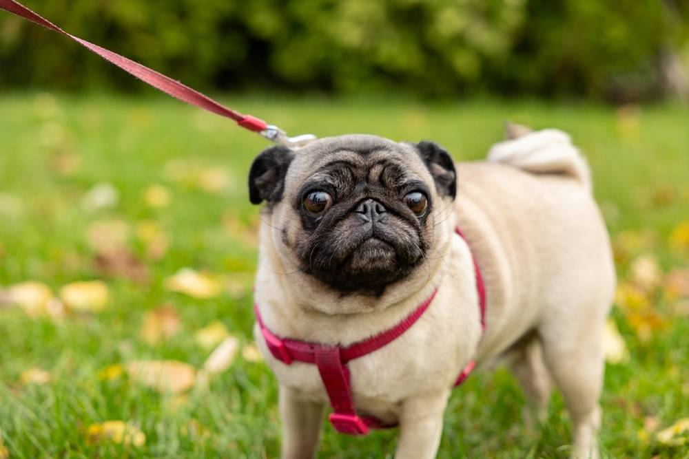

Породы собак
Вес мопса – сколько весит порода по стандарту
16 марта 2026
5 минут на чтение
295 просмотров

Родина этих собак – Китай, такие питомцы высоко ценились императорами, а в Европу впервые попали в начале 16 в. с голландскими торговцами и быстро завоевали популярность в Нидерландах, а спустя некоторое время – и в других странах. В наши дни порода широко распространена и разводится во многих государствах.
Следить за тем, сколько весит мопс, очень важно, поскольку эти собаки относятся к брахицефальным, то есть имеют укороченную морду и дыхательные пути. Для таких питомцев ожирение является одним из факторов, способных привести к нарушениям дыхательной функции и сопутствующим заболеваниям, поэтому контроль необходим на протяжении всей жизни.
Сколько весит мопс – показатели по месяцам
Эта компактная порода не отличается значительным половым диморфизмом – высота в холке и масса тела у кобелей и сук примерно одинаковы. Самцы нередко вырастают более крупными, чем самки, но это необязательное условие. Важнее плотное мускулистое телосложение питомцев и сбалансированные пропорции.
| Возраст питомца |
Вес в норме (кг) |
Рост (см) |
|
Мальчики | Девочки |
Мальчики | Девочки |
| 1 месяц | 0,7-1,1 | 0,7-1,1 | 7,5-9 | 7-9 |
| 2 месяца | 1,1-2 | 1-2 | 8,5-12 | 8-11,5 |
| 3 месяца | 2,2-3 | 2,1-3 | 11-14 | 10,5-13,5 |
| 4 месяца | 2,5-3,8 | 2,4-3,8 | 13-17 | 12-16 |
| 5 месяца | 3,5-5,2 | 3,4-5 | 16-19 | 15-18 |
| 6 месяцев | 4-6,1 | 3,9-6 | 17,5-21 | 17-20 |
| 7 месяцев | 4,4-6,3 | 4,2-6,2 | 19-24 | 18-23 |
| 8 месяцев | 4,7-6,6 | 4,6-6,5 | 20-26 | 19-25 |
| 9 месяцев | 5,1-7,1 | 5-7,1 | 21-28 | 21-27 |
| 10 месяцев | 5,7-7,6 | 5,7-7,5 | 22-29 | 22-28 |
| 11 месяцев | 6-8 | 6-8 | 23-30 | 23-30 |
| 12 месяцев | 6,3-8,1 | 6,3-8,1 | 25-30 | 25-30 |
| 2 года | 6,3-8,1 | 6,3-8,1 | 25-30 | 25-30 |
| 3 года | 6,3-8,1 | 6,3-8,1 | 25-30 | 25-30 |
Важно: Указанные параметры, согласно стандарту, считаются идеальными, колебания в их пределах допустимы, как и минимальные отклонения, если они не нарушают общую гармонию тела. Рост в описании не зафиксирован, поэтому некоторые мопсы могут быть выше – до 32-33 см.
От каких факторов зависят рост и вес питомца?
Определяющими являются генетика и наследственные особенности собак. Их размер должен соответствовать требованиям, указанным в стандарте, значительные отклонения делают невозможным участие в выставках и племенном разведении. Щенки обычно наследуют рост и примерную массу родителей, но встречаются и исключения, поскольку могут проявиться рецессивные гены.
Главными внешними факторами, воздействующими на домашних животных, считаются: уход, питание, уровень активности, состояние здоровья. Половая принадлежность также важна, но у представителей породы различия между кобелями и суками невелики и не учитываются при оценке экстерьера.
Как долго растут щенки мопса?
У маленьких пород физическая зрелость наступает достаточно быстро. Самцы считаются полностью сформировавшимися примерно в 12 месяцев, но иногда их рост продолжается чуть дольше. Девочки взрослеют до 1,5 лет, это связано с развитием внутренних органов, особенно репродуктивной системы. Максимального размера питомцы обычно достигают к 10-12 месяцам, масса тела может незначительно увеличиваться еще некоторое время, но в большинстве случаев показатели в этом возрасте почти не меняются.
Почему вес мопса может отклоняться от нормы?
У породы есть предрасположенность к ожирению. Она обусловлена тем, что питомцы склонны к перееданию и не слишком активны. Именно малоподвижный образ жизни и избыточное количество пищи считаются типичными причинами появления лишнего веса у мопса. Вероятность ожирения усиливается из-за кастрации: эта процедура изменяет гормональный баланс в организме и снижает энергетические затраты примерно на 30%, поэтому после нее важно сразу скорректировать рацион.
Избыточный вес в некоторых случаях может быть симптомом заболевания, например, гипотиреоза. Также он нередко служит дополнительным стимулом к развитию нарушений, увеличивая нагрузку практически на все системы организма. Для мопсов это очень важно из-за строения их морды, ожирение – один из факторов, провоцирующих развитие брахицефального синдрома.
Основные причины истощения (кахексии):
- Заболевания желудочно-кишечного тракта
- Нарушения работы органов эндокринной системы
- Инфекции
- Онкологические заболевания
- Болезни полости рта, такие как зубной камень, гингивит и др.
Как поддерживать оптимальный вес собаки?
Так как мопсы являются брахицефальной породой, контроль массы тела для них чрезвычайно важен. Избежать отклонений можно с помощью правильного питания. Суточную норму корма рассчитывают, исходя из размера и уровня активности питомца, также важно учесть отличия в потребностях собак разных возрастных групп. Для маленьких пород предпочтительно дробное кормление – не менее 3 раз в день небольшими порциями.
Количество лакомств не должно быть чрезмерным. Каждый кусочек угощения повышает общую калорийность рациона, для поощрения лучше использовать похвалу, ласку, общение. Важна и регулярная, но умеренная активность. Мопсы не отличаются высокой подвижностью, но нуждаются в ежедневных прогулках и различных играх: они помогают поддерживать оптимальный вес и физическую форму.
Источники:
- Стандарт FCI № 253. Мопс.
- Джакомо Бьяджи. Заболевания собак, связанные с породной предрасположенностью и неправильно подобранной диетой // Veterinary Focus № 28.3, 2018.